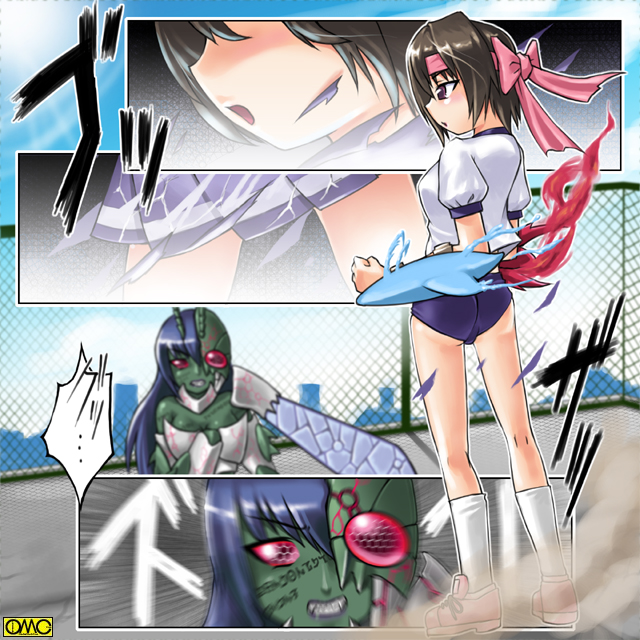

試験休み。そして春休みに突入するが、まるで花が咲く季節に合わせたかのようにアマッドネスが次々と現れる。
そうは言えど一日おき程度の上に単体。
変身。そして戦闘にもなれた清良・セーラはこれを次々と屠っては行く。
だがセーラには撃退することはできても予防することは出来ない。
常に後手に回り、必ず女性へと転換させられる犠牲者が出る。
清良の住む福真市。そしてそこにある警察署。
ここ福真署に捜査本部が設置され、対策会議が練られていた。
「それでは一城君。始めてくれ」
「はい」
一城と呼ばれた女性は短く返事をする。
彼女の名は一城薫子。髪の短いボーイッシュな印象の女性警察官である。
彼女は女性と言うことで「被害者」たちの事情聴取に駆りだされていた。
本来は男性の「犠牲者」たちも、女性相手に心を開くのか雄弁になる。
そして警察が掴んだのは…
＊半人半獣の化け物の存在。
＊それに襲われると意識を失い、とりもどしたときには女になっていた。
＊その怪物を倒す少女がいるらしい。
それだけであった。どうにも手の打ちようがない。何しろ神出鬼没。
だが最後の少女については「川沿いをレオタード姿でとんでいた」とか「人魚のように素早く東京湾を泳いでいた」とか眉唾物の証言が。
とは言えど後の方は巡視艇の乗組員の証言。
やはり集団性転換事件の時に現場に居合わせた「スクール水着姿でオートバイに乗る少女」は、身内である白バイ警官が見ている。
しかも暴走行為をしていた高校生男子と思しきものが変身したとまで。
「どうにもこうにも…子供のドラマみたいな話だな」
本部長。末倉がぼやいてみせる。
「本部長。怪物の呼称ですが」
「ああ。そうだな。一城君。その未確認生命体だが」
「それなら所属不明機に引っ掛けて『アンノウン』ってのは？」
挙手もせずに会議に出ている刑事が言う。
「単純にモンスターでいいじゃん？」
「男として死んで女として生き返ったようなもんだろ？ ギリシャ神話からオルフェ。それともエノク……めんどくせぇ。まとめてオルフェノクってのは？」
「死んでないと言うならアンデッドとか？」
「魔が化ける魍魎で…魔化魍（まかもう）？」
「人間社会に虫食うんだからワーム」
「想像上の産物じゃないのか。イマジネーション……イマジンとかで」
好き勝手に言い出す。
やはりあまりにも現実離れしていて気持ちが入りにくいからだろう。
「こほん」
薫子がわざとらしく咳払いをした。全員それで会議中と思い出した。
「怪物の呼称ですが、証言にあった名前。アマッドネス。それを用います。アマッドネス。それが敵の名前です」
とりあえず名前がわかった。
それだけでも実像がおぼろげに見え、気持ちも入る。
戦乙女セーラ
ＥＰＩＳＯＤＥ９「兄弟」
春。新学期。高岩清良も二年生に進級した。
「はぁ…春休みはまったく遊べなかったな」
登校中にぼやくのも無理はない。
清良は春休み中は二日に一度の割合でアマッドネスたちを倒していたのである。
遊ぶ暇などあろうはずもない。
（しかしこれでだいぶ数を減らせました。まだまだ小物ですがそれでも被害を防げています）
頭の中に従者の声が響く。
（やつらあまり相性のいい相手がここにはいないのか、まとめては出てこないのが助かる）
（もしそうなったらブレイザ様やジャンス様にも応援をしていただきましょう。そろそろブレイザ様のいる王真市や、ジャンス様の百紀市の出現頻度が低くなってきていますし）
（逆に言えば手ごわいのが残っているんだろう。こっちは俺一人で何とかするさ）
「キヨシ。聞いているの？」
幼なじみの怒声で我に返る。
隣ではセーラー服姿の少女。野川友紀が頬を膨らませていた。
「ああ。悪い悪い。何だっけ？」
「もう。春休み中はいっつも留守で。久しぶりに会えたのに上の空なんだもん」
「ごめんごめん」
秘密を保持するのは想像以上に労力を要する。いっそ本当のことを打ち明けられたら。
この幼なじみを「騙し続ける」のは倍以上の労苦を要する。
だがこんな秘密を打ち明けるなど出来ない。ましてや女の姿で戦っているなんて……。
「よう。仲が良いな。お二人さん」
大半の生徒には見慣れない制服。紺色のブレザーだがそれをラフにきくずしている。
顔は端整な部類に入るが、それはあくまで普通にしていれば。
あまりにも威圧的。特に目つきが悪かった。髪もオールバックで年齢より老けて見せている。
難を怖れて福真高校の生徒は遠巻きに見ている。
「てめぇ…こんなところまできやがったか」
清良が歯噛みする。
「知り合いなの？」
友紀の質問。
「ああ。ま……『お仲間』と言う奴だ」
清良の返答。
「へっ。すっとぼけんのもいい加減にしろよ。果し合いの約束を春休み中無視しやがって」
それで乗り込んできたらしい。
「こっちにも事情があるんだよ」
もちろん誰にも言えない事情である。
「テメーはワルのクセに変に律儀なところがあるからな。新学期の初日は登校して来ると思ったぜ」
待ち伏せだった。清良は苦々しい表情になる。
（春休み潰してアマッドネスとケンカしてたのに、今度はこっちでかよ……）
だがその苦悩は意外な形で解消される。
「良二」
一人の少年の怒声だった。こちらは福真高校の制服を着ている。
第一印象は真面目に見える。めがねがさらにそれを際立たせている。
だがそれより驚いたのはその姿。今までは意識などしなかったが…
「飛田君…この人とそっくり」
友紀の指摘どおり。飛田と言う少年と良二と呼ばれた不良は瓜二つであった。
髪型や全体的な印象の違いで、不良少年だけ見ていたらわからなかったが、二人揃うとすぐにわかった。
「へへへ。思ったより早かったな。兄貴｣
「良二、貴様は飛田の家の跡取りの自覚はあるのか？」
「そんなのは品行方正な翔一様のものだろう。双子の弟なんざカスみてえなモンだ。ほんのちょっと生まれるタイミングが違うだけでよ」
「それがぐれた言い訳になると思っているのか」
「なるさ。誰も俺を認めないならこういう形ででも認めさせてやる」
いつの間にか兄弟げんかになっていた。
「おい。テメーら。兄弟げんかなら家でやれ。それに俺を巻き込むな」
アマッドネス相手には「正義の味方」でも、さすがにこの場では普通の少年としての本音が出た。
「高岩君。僕にいわせれば君もこの愚弟と差はない。生活態度を改めることを推奨する」
いかにも委員長らしい言い回しだが、実際に彼は風紀委員を一年のときは勤め上げていた。
その若干やりすぎなほど潔癖なところは問題視されたが、誰よりも校内の風紀に気を使っていたのは万人の認めるところ。
「けっ。白けちまったぜ。ほんとは高岩をぶちのめして、その後で兄貴に自慢してやるつもりだったがな。順番通りに行かなかったぜ」
勝手に来た不良は勝手に帰路につく。
「今日のところは見逃してやるぜ」
足早に立ち去る。
「待て！ 話はまだだぞ。良二」
だが予鈴が鳴っては追うわけにはいかない。
よもや風紀委員が自ら校則を破ることは出来ない。
立ち去ったこともありこの場はそれで終わりだった。
それぞれ校内へと入っていく。
清良やキャロルでも感知しにくい魂のままのアマッドネスが２体。
（姉上。これはかっこうのよりしろ）
（うむ。双子とは好都合。だがあの翔一とか言うほう。少々惜しい。ヨリシロや奴隷などではなく、我らに子種を提供する存在になれそうだが）
不老不死に近いアマッドネスではあるが、子孫を残したいと言う思いは辛うじて残っている。
それも長年の封印で「化け物」としての部分が強くなった昨今では希薄になり、子孫繁栄を無視して全ての男を女性化させ、自分たちの奴隷としようとしていた。
しかしこの２体。ショウとリョウは「姉妹」と言う「人間らしさ」を残していたためか、僅かにそこに考えが及ぶ。
（なに。そんな奴だからこそ姉上の肉体に相応しい）
（そうか。リョウがそこまで言うのであれば）
２体は時を待つ。
始業式のみで終わった故に飛田翔一も早々と帰宅する。そして部屋の扉を開ける。
「よう。兄貴。待ってたぜ。さすがは双子。俺が珍しく家にいるとわかったらしいな」
「ああ。貴様とまったく同じ顔と血を持つこの肉体が恨めしい」
飛田家は名家であった。それゆえ跡取りには気を割いていた。
生まれた男児は双子のみ。
これが例え年子でも年齢が違えばそれを理由に長男に後を継がせる事になる。
だがその差がない双子である。
一応は兄・翔一にその権利が行った。
しかしそれが劣等感につながり、弟・良二は見事にぐれた。
翔一はそれに心を痛め、さらには跡取りとしてのプレッシャーでめったに笑わなくなった。
そして本来は助け合うはずの兄弟は互いに憎しみ合うように。
兄は手間をかけさせ、そしてプレッシャーと無縁に勝手にしている弟に対して。
弟は僅かな差で全てを手に入れた兄に対して。
互いの感情は朝の一件で爆発寸前。言い換えれば負の感情が最大限になっていた。
（いまだ）
二つの魂は二つの肉体に同時に飛び込む。
双子の兄弟は同時に体を痙攣させ、硬直する。
やがてそれが解けると顔を上げて見合わせる。
両者の目に熱い涙がこみ上げて、どちらからともなく抱き合った。
「姉上。暖かい。暖かいです」
「ああ。妹よ。我らは再び肉体を得たのだ。こうしてお前を抱き締めることが出来ようとは」
二人は肉体を得た喜びに涙を流して喜んでいた。
「さぁ。姉上。今宵は祝いましょう」
「ああ。妹よ。そしてそれを済ませたら我ら二人でセーラを打ち果たそうぞ」
「二人でないと何も出来ないと馬鹿にした奴等め。ことごとく返り討ちではないか」
「見ているがよい。お前たちが馬鹿にした双子が天敵であるセーラを倒す様を」
翌日。入学式でまたもや早くに帰路に着く清良の前に飛田良二が立ちはだかった。
「高岩。昨日の続きをしようぜ」
「……テメーが勝手に帰ったんだがな」
どうやら避けられないと悟って相手することを決意した。
「友紀。お前は早く帰れ」
「そうだ。他にいたんじゃ邪魔だ」
清良はこれを不良なりの意地とみなした。だからあくまでも人質などとらないと。
闘いの場所は福真高校の屋上が選ばれた。
（ここは安楽を完全な女にしちゃった場所でいやな思い出がなぁ）
清良が嫌がったのはそれだけではない。
いわば清良のホームグラウンドであるこの場でどうしてわざわざ仕掛けるのか。
どこか罠を仕掛けた場所に連れて行った方が良いだろうと。逆に不気味だったのだ。
「さぁて。回りくどいのは止めにしておくか。高岩。俺には新しくやることが出来た」
「だったらそれをやりにいけよ」
「その最中だ。俺は戦乙女。セーラを倒さないといけない」
もし何かを飲んでいたら咽たのは間違いない清良。
「な……なんだって？」
「だが奴が普段はどこにいるのか。あるいはどんな姿なのかもわからない。正体を知った奴は片っ端からあの世に行っているからな」
（それじゃ俺の方が悪党みたいじゃねーか）
「だから高岩。まずはお前を血祭りにあげて、セーラに対する狼煙とする」
おびき出しに利用するつもりと判明。
セーラがこの学校の関係者とは絞れたが誰かわからない。だからこの場で戦うことにした。そうとった。
「むんっ」
良二は両腕を左横に突き出す。それを円を描くように上に。
「邪魔くさいな」
一旦動きを中断させ、シャツを開く。
そしてそれから元の位置に戻し、右腕は天をつくように。左腕も折りたたんで胸の前に。
「はぁっ」
気合と共にジャンプする。逆行で見えないが姿が変わっているのは気配でわかる。
そして高々と飛んだ頂点から清良目掛けて降りてくる。
「うわっと」
さすがに距離がありすぎて何とか避けられた。
「失敗か。初めて…いや。『久しぶり』だったからな」
良二だったものは異形へと姿を変えていた。
全身が黒みががった緑。節足動物を思わせる四肢。何よりも赤黒い巨大な複眼と屹立する二本のアンテナが昆虫……バッタのイメージを持たせた。
「ちっ。アマッドネスに魂売り渡しがったか」
正体を隠すなんていってられない。清良はポーズを取る。
「変身」
スパークするとセーラー服姿の戦士に。
「高岩！？ 貴様がセーラだったのか？」
「ああ。そうだよ。お望みの決着をつけようじゃないか」
軽口を叩きつつも脳内では通信を送っていた。
（キャロル。今どこにいる？）
（そちらに向かっていますが、何しろ小さい肉体ではなかなか）
従者は普段は黒猫の姿をしている。これならどこにでもいる存在。
だが本来の姿は純白の天馬。そしてそれを現代風にしたオートバイ。
しかし天馬は論外。無人のオートバイが走るのも注目される。黒猫の小さな姿のまま駆けつけていた。
（そうか。なるべく早く来てくれ。敵はバッタの特徴のアマッドネスだ）
戦闘が始まった。
出方を探るべく防御形態のエンジェルフォームで戦っていたが、バッタの意匠だけに強靭な足を生かした戦法だ。
（フェアリーならスピードに対抗できるが非力すぎる。マーメイドは話にならない。やはりヴァルキリアか）
そこからなら瞬時に別のフォームにいける。
「死ね」
バッタ…ホッパーアマッドネスが迫る。そこにカウンター気味に
「キャストオフ」
セーラー服を散り散りに飛ばす。
「ぎゃっ」
まともに食らってもんどりうつホッパー。

このイラストはＯＭＣによって作成されました
クリエイターのていくあうとさんに感謝！
「よし。クロスファイアでとどめ」
動きの止まった相手の懐に飛び込む。しかし強烈な悪寒がセーラの動きを止めた。
（まさか…もう一体？）
そして視界に入る飛田翔一の姿。
「危ない。逃げろ」
相手がこの少女の姿を知らないのも忘れて叫ぶ。完全に意識が離れている。
そこにホッパーの強烈な蹴りが入る。
「くわっ」
一応は「布の鎧」に守られているがそれでも効いた一撃。たまらず後退する。
その間に翔一はゆっくりと歩み寄ってくる。
「ば…バカヤロウ。これはマジなんだ。逃げろ」
「ああ。知っているさ。何しろ可愛い弟。そして妹だからね」
「なに？」
弟と言うのはわかる。しかし「妹」と言う表現は？
翔一はそれに構わず右手を左上に突き出す。
それをやはり円を描くように右上に運ぶ。そしてそこにたたんでいた左腕を突き出し、右手を折りたたむ。
瞬間的に姿が変わる。やはりバッタの怪物。僅かな違いと言えば色がやや明るいこと。
「お…お前ら…兄弟揃ってアマッドネスに…」
「ふふ。我らもまた姉妹」
「二人でないと何も出来ないと蔑まれていた地獄の姉妹」
「だが二人でないと倒せない相手もいる。セーラ。まずはお前を血祭りにして同胞たちを見返してやる」
（まずい…同時に２体なんて不利もいいとこ。しかも魂も素体も双子じゃ相性がよさそうだ。一人ずつにしないと…だがどうやって）
その逡巡が命取りだった。
２体のホッパー。姉のほうを１号。妹のほうを２号と便宜上名づけるが、同時に飛び上がった。
太陽を背にして姿をくらます。
その同時に急降下してのキックがセーラの腹部をめがける。
「ホッパーダブルキック」
息の合った二人のキックが見事に炸裂する。
「ぐわああっっっ」
さすがのセーラもこれではたまらない。
吹っ飛ばされて意識を失い高岩清良の姿に。
そして屋上から落ちていく。